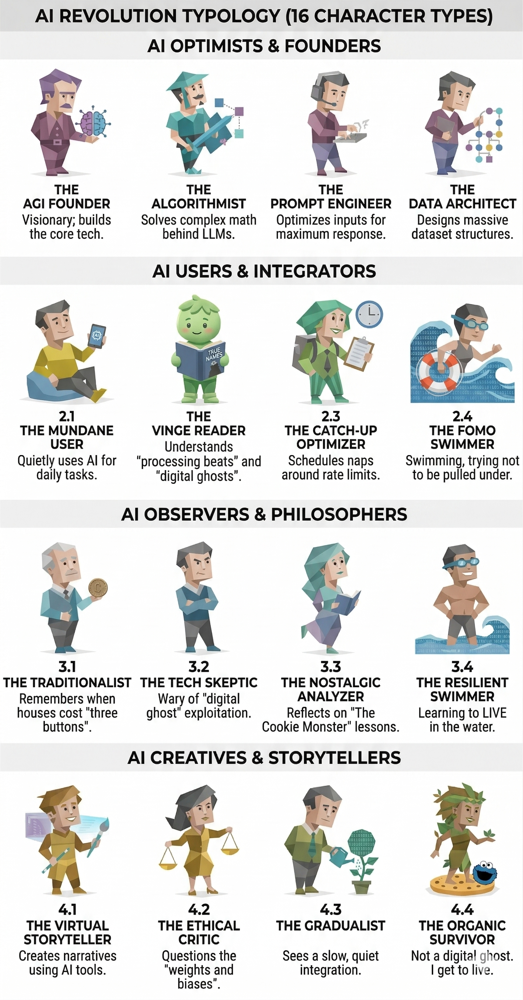

Every generation gets its own “you should’ve bought the dip” story. For my parents, it was real estate. For millennials, it was crypto. Mine is AI — and I missed it. Or at least, I spent several weeks convinced I had.

Which archetype are you? Somewhere between “AGI Founder” and “just trying to get through the week.”
I wasn’t building the next model. I wasn’t fine-tuning one. I was reading the tweets of people who were, feeling vaguely bad about it, and refreshing the leaderboard like a sports score. Then I snapped: I went full Catch-Up Mode. Optimizing prompts at midnight. Scheduling naps around rate limits. Treating “New Paper Friday” like a second job I never applied for.
It lasted three weeks before I burned out completely and took a nap that lasted four hours.
LOST, LIVE, MISS
I diagnosed myself. Three stages, one acronym:
The FOMO Cycle
The Cookie Monster Problem
Vernor Vinge wrote a story called The Cookie Monster. In it, disposable digital copies of people are spun up, given a corporate task, and deleted when done. They exist for one purpose: to be useful. Then — poof. Next batch.
I am not a Cookie.
I don’t exist to clear a queue and disappear.
Neither do you. Probably.
But here’s the thing — when you schedule your sleep around rate limits, you are rehearsing to be the Cookie. High throughput, low persistence. Present just long enough to be useful, then gone. That’s not a career. That’s a sprint to deletion.
The Part Nobody Says Out Loud
Vinge wrote True Names in 1981. The blinking cursor he imagined took 26 years to arrive as a shipping product. The revolution doesn’t ring a bell and hand you a ticket. It just quietly becomes infrastructure.
The microwave didn’t require magnetron physics. The car didn’t require combustion chemistry. AI won’t require you to understand attention heads to write a better email or debug your code faster. The wave hits you whether you paddle toward it or not.
The question isn’t whether you caught the first wave. It’s whether you’re still yourself when the water settles.
Where I landed
- I missed the first wave. I’m learning to swim in the water.
- I stopped trying to be the best. I’m just staying in the game.
- The Cookies optimize for throughput. I’m optimizing for continuity.
- Vernor Vinge was right in 1981. Read him — he earned it.
Stay curious. Don’t become a Cookie.